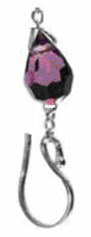

“珠缀花蕊，人间几多酸泪”......
挂缀在很早就被人们作为一种装饰品，垂坠的风韵，华丽摇曳的摆动，展现出一种与众不同的优雅与高贵。而我们的主人公小 Q，正想买一条漂亮的挂缀放在寝室里作为装饰。
挂坠的构成，是由若干粒缀珠相互连接而成。每一个缀珠由三部分组成：分别是珠子、珠子上方的连接环与珠子下方的挂钩（如下图）。我们可以简单的认为从上往下数的第 $i$ 个缀珠是将它的连接环套在其上方（也就是第 $i-1$ 个）缀珠的挂钩之上（第一个除外）。小 Q 想买一根足够长的挂缀，这样显得更有韵味。

然而商店的老板告诉小 Q，挂缀是不可能做到任意长的，因为每一个珠子都受到重力作用，对其上方的挂钩有一定的拉力，而挂钩的承受能力是有限的。老板还告诉小 Q，他一共拥有 $N$ 个珠缀（假设每一个珠缀都很漂亮，小 Q 都很喜欢），每个珠缀都有其各自的重量与承受能力。一个挂缀是稳定的，当且仅当对于其上的每一个珠缀，它下方所有珠缀的重量和（不包含自身）不超过其挂钩的承受能力。
小 Q 希望她的挂缀尽量长，你能帮她计算出最长可能的稳定挂缀么？当然，如果有多个可选方案，小 Q 希望总重量最小的。
 Comet OJ
Comet OJ